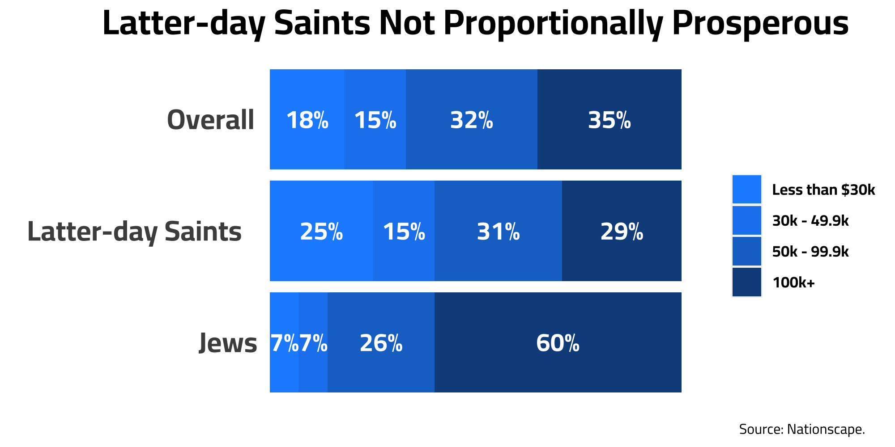
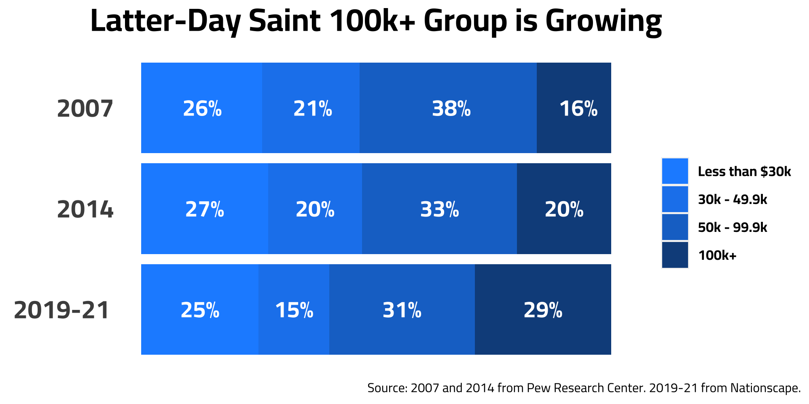
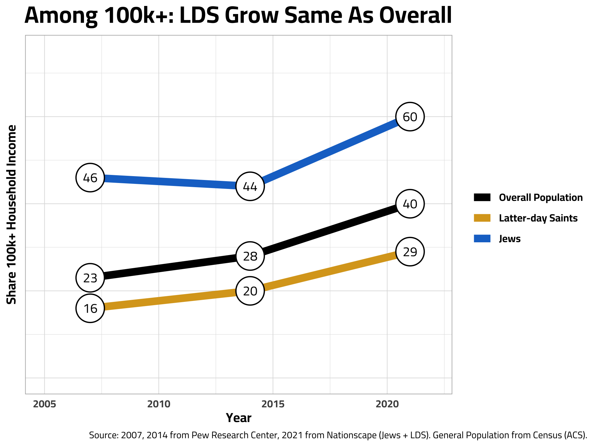

Myth of Latter-day Saint Prosperity

Introduction
As a member of the LDS church, I have grown up hearing the claim although US Latter-day Saints make up only a small percentage of the population, we are disproportionally wealthy when compared to the US general population. I assume this is a common misconception, given the amount of times I have heard it, as well as something I believed myself. At some point, I came across an article regarding Mormons in the US. I would just refer you to that article and you could be on your way, but the data is from 2009 - which is almost 15 years ago now! What a perfect opportunity for me to bake up some yummy data snacks regarding the breakdown of Latter-day Saints by household income and how it has changed over time.
The Snacks
Using data from a large political survey project of 500,000 Interviews from 2019-2021, I was able to filter the sample to only Latter-day Saint respondents and ended up with a sample 6,452 members found across the United States. I used the same data source as a previous blog post I wrote up here if interested.

From this household income figure, we can answer our our first question! In 2021, the LDS actually has larger lower and middle classes and has a smaller proportion of people in the highest income bracket than the rest of the population. Hopefully, this is enough to convince you that Latter-day Saints being proportionally wealthier is a myth.
I included Jews for the sake of including a group that actually is proportionally wealthy, and the gap is large. According to our data, the Jews are more than twice as likely to be in the top income bracket than Latter-day Saints.
Now lets look at how this trend has changed over the last 15 years…
Our data source we used above is only for 2019-21, so we need to combine another source for this next graph. Pew Research Center publishes a religous landscape study that collects large sample sizes of most religious groups in the United States. For Latter-day Saints, there is a sample of around 500 for this study which was fielded in 2007 and 2014. From this, we can look at 3 snapshots of LDS income over the last 15 years.

It definitely looks like income is increasing over time among Latter-day Saints. In the 100k+ group, we see 16% to 20% then 29%. However, this doesn’t account for forces like inflation and how the overall US population has moved over the last 15 years. So let’s make another one, to see how income has changed compared to the general population
Side note about the above figure: I find it interesting that the proportion of LDS people in the lowest income bracket has remained relatively stable over time. While we don’t have the data we need to safely make this claim, our graph could suggest that there is a slight income disparity growing within the church as the middle income bracket shrinks over time.

Looking now at the Latter - day Saint group over time, the percentage of households making 100k+ consistently remains lower than the overall population. Also, it seems that the gap between the overall population and Latter - day Saints is growing over time. In 2007, there is a 6 point difference and goes from 6 to 8 to finally 11. Perhaps not only are Latter-day saints below the average, but may even be getting poorer over time!
Latter-day Saints are not a poor group overall (30% make 6-figures+!), this information just disputes the claim that Latter-Day Saints are proportionally wealthy.
Appendix
The code that I used to analyze this data and create the graphs above are found on github. Please reach out with any questions or thoughts.